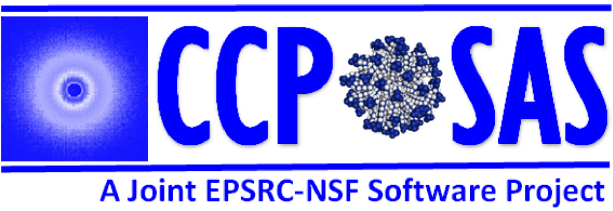
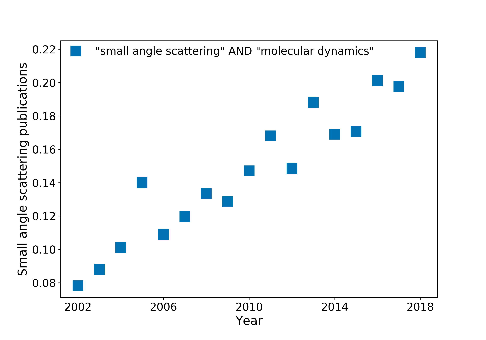
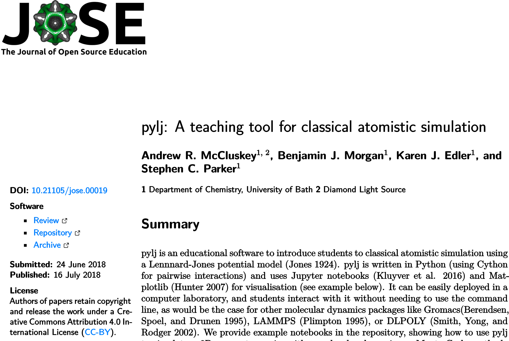
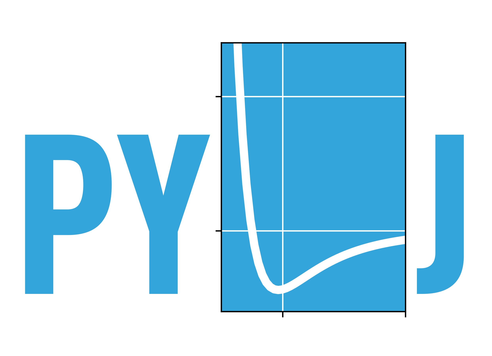

pylj: an open-source Python library for teaching the interaction between molecular simulation and scattering
SAS2018
— 2018/10/09
DOI:
10.6084/m9.figshare.7150820
Andrew R. McCluskey
Uni Bath/Diamond Light Source
arm61@bath.ac.uk
an_drewmcc
arm61.github.io/talks/sas2018-1
an_drewmcc
outline
why?
molecular dynamics simulation are becoming popular in scattering analysis
what?
tools to show molecular dynamics simulation and how scattering can be calculated from it
how?
pylj
an_drewmcc
why?
why does classical simulation matter?
an_drewmcc
simulation is informing our analysis

an_drewmcc
simulation is informing our analysis

an_drewmcc
simulation is a black box for many
undergraduates are really introduced to classical simulation in detail
experimentalists often use tools like waxsis and sassie without understanding what is happening
an_drewmcc
what?
what can we do about it?
an_drewmcc
bring modeling to the masses
@ Bath
computational chemistry labs from first year
computational chemistry lectures from second year
continued to late undergraduate level
an_drewmcc
bring modeling to the masses
@ ISIS neutron training course
half-day introduction to molecular dynamics
demonstrate theory and show application in neutron science
an_drewmcc
how?
how can we introduce simulation?
an_drewmcc
pylj
open-source, python library to engage students in atomistic simulation
MIT licence; source code available on
GitHub
paper in
Journal of Open-Source Education
, 1(2), 19. DOI: 10.21105/jose.00019
particularly useful to show the interaction between simulation and scattering

an_drewmcc

an_drewmcc
find out more
pythoninchemistry.org/pylj
an_drewmcc
acknowledgements
Benjamin J. Morgan
Fiona Dickinson
Ian Thompson
Karen J. Edler
Stephen C. Parker
Andrew J. Smith
Jonathan L. Rawle
an_drewmcc
Sadie, my dog